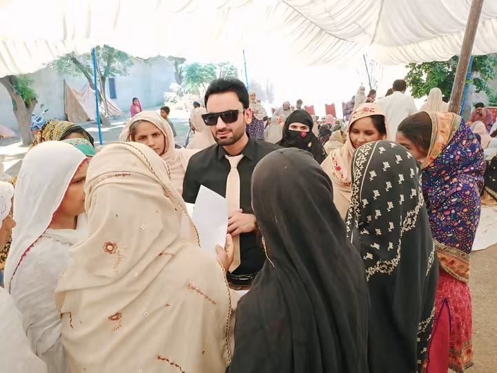

H
Healthcare Access
Provides medical camps and a subsidized hospital referral network that brings dignified healthcare support for vulnerable groups.
Al-Nisa Welfare Society is a registered NGO located in Okara, Pakistan. It focuses on improving healthcare access. It works to protect rights. It helps women and vulnerable communities through compassionate community-focused initiatives.

Al-Nisa Welfare Society is a registered non-governmental organization based in Okara, Pakistan. It was founded in 2020 to support women's empowerment and holistic family health. Al-Nisa Welfare Society believes in compassion, equality and making sure every person can live a dignified life.
It helps people by setting up camps and working with other groups to make sure healthcare easier to access. Al-Nisa Welfare Society also works to promote child protection and support the rights of women. Since it began, the organization has reached more than 8,000 beneficiaries.
Read Our Full StoryProvides medical camps and a subsidized hospital referral network that brings dignified healthcare support for vulnerable groups.
We focuson training women with skills and helping them become financially independent over time.
Raising awareness about gender-based violence, harassment and child protection.
Working with government bodies, international partners and academic institutions to strengthen community health and protection initiatives.
Since 2020 Al-Nisa Welfare Society has been working across Okara to create measurable changes by providing healthcare and community initiatives.
We bring MBBS doctors directly into communities where women face financial or social barriers to accessing healthcare and provide them with medical services.
We speak up against child abuse and begging. We have joint initiatives with UNICEF Pakistan on child protection and anti-beggary programs
The MOU network gives 50% treatment subsidies for eligible patients through Al-Nisa.
Our community work raises awareness of gender-based violence, harassment, child protection and human rights.
Explore Our ProgramsJoint initiatives on child abuse prevention and anti‑beggary programs.
Coordination with district health authorities for healthcare initiatives.
Collaboration on gender‑based violence and public health initiatives.
Academic collaboration for research‑backed social interventions.
Active partnership to support victim assistance and community safety.
View Our Impact And PartnershipsContribute through Partnerships, Volunteering, or supporting community initiatives. Help us reach more people, keep vulnerable groups safe and offer better chances for women and families.
Get Involved Learn About Our Impact